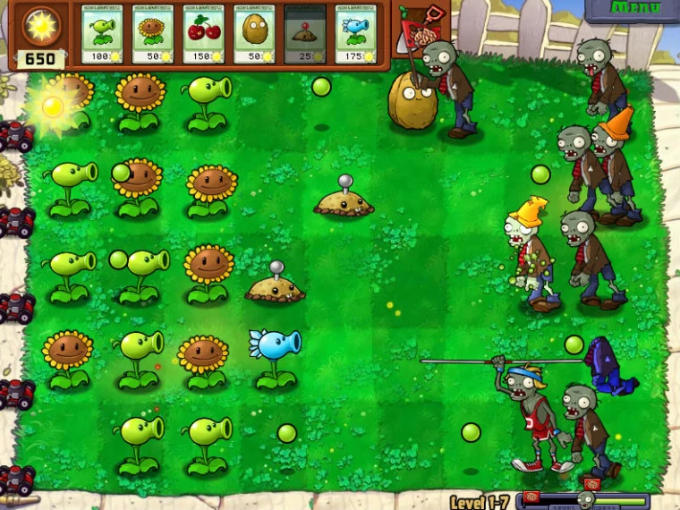
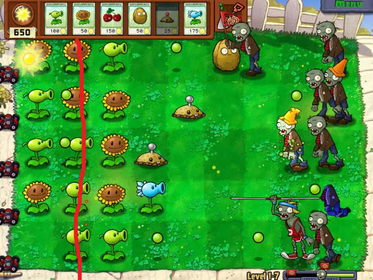
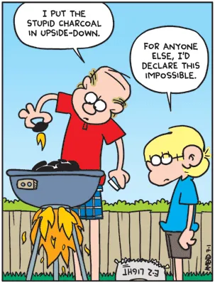

Техническая аномалия Plants vs Zombies
В универе я играла в игру Plants vs. Zombies, до того, как ее съел капитализм. Игровое поле выглядит вот так:

На телефоне было нормально, а моем тогдашнем планшете игра работала странно. Судя по всему, она не смогла понять, какое у меня разрешение экрана, и у меня поехала верстка. Выравнивать верстку игрового интерфейса для разных разрешений экрана это всегда боль, и мой случай показал, что случается, если сделать это неправильно – разные элементы интерфейса наезжали друг на друга, некоторые были спрятаны полностью, скролл менюшек работал не полноценно. Это было неудобно, но в целом все, что мне было нужно, было доступно, и игра была играбельной.
Но вот в чем странность. На скриншоте вы можете увидеть слева игрового поля газонокосилки. Это “право на ошибку” – как только зомби доходит до крайнего левого тайла, она включается и убивает всех зомби на этой дорожке. Работает только один раз – если ты позволишь второму зомби дойти до края, он тебя все-таки съедает.
На моем планшете с поехавшей версткой газонокосилки находились там, где проведена красная линия:

И, да – это был не просто визуальный глюк. Газонокосилки на самом деле включались и срабатывали, как только зомби доходил до второго слева тайла, до того, как он съедал два растения на крайних левых тайлах!
Мне очень интересно, как это запрограммировали, и почему было запрограммировано именно так. Что элементы интерфейса расположены по-разному на разных экранах – это нормально, но почему расположение газонокосилок определено относительно экрана, а не относительно игрового поля, на котором они находятся? И почему триггер срабатывания газонокосилки повязан не на расположение зомби относительно поля, а на коллайдер газонокосилки (видимо…)? И почему вообще игровые менюшки и объекты в игровом мире находятся на одном слое и могут триггерить друг друга? Если бы в каком-нибудь Unity или Godot я хотела настроить общую физику между камера-спейс интерфейсом и ворлд-спейс объектами, это была бы нетривиальная задача, которую надо специально вписывать – но тут оно появилось в виде бага?
Подобные решения часто называют “костылем”, но тут подходящая метафора это роботизированное инвалидное кресло Стивена Хокинга. Если у кого-нибудь есть объяснения, почему так получилось, которые не выглядели бы к месту в романе про Плоский Мир, я была бы рада их услышать.
